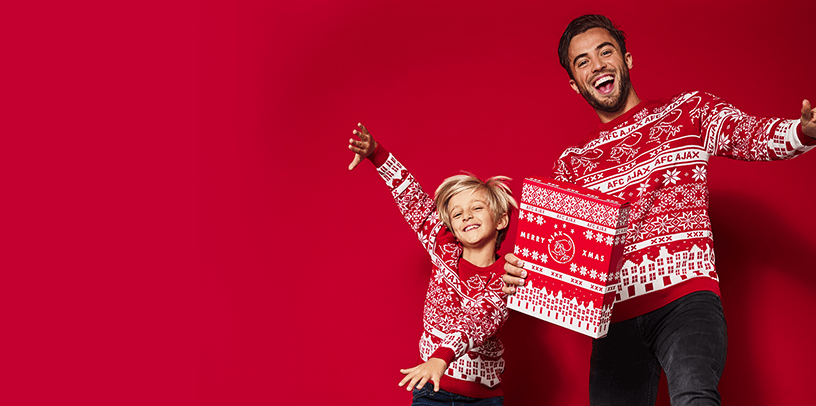

Tagliafico mist treffen met RKC.

Nico Tagliafico is voor 1 duel geschorst naar aanleiding van zijn rode kaart tegen Sparta Rotterdam. De Argentijnse linksback heeft het schikkingsvoorstel van de aanklager betaald voetbal geaccepteerd. Tagliafico mist daardoor het duel tegen RKC van komende zondag.
De linksback werd zondag in de 27e minuut van het veld gestuurd. Tagliafico was in de achtervolging op Mohamed Rayhi, ging naar de grond en raakte daarbij de bal met zijn hand. Volgens scheidsrechter Kamphuis ontnam hij daarmee Sparta een 100 procent scoringskans, zo verklaarde de arbiter zijn beslissing na afloop.
Ajax won ondanks het numerieke ondertal met 0-1 op Het Kasteel. Antony werd de matchwinner met een afstandsschot.
De Ajax Kersttrui
Shop nuDatum: 14.09.2020Auteur: AFC AjaxFotograaf: AFC Ajax
#AJARKC